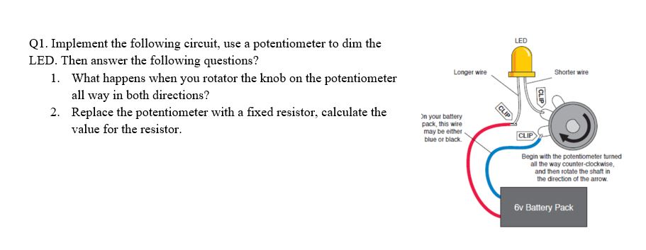
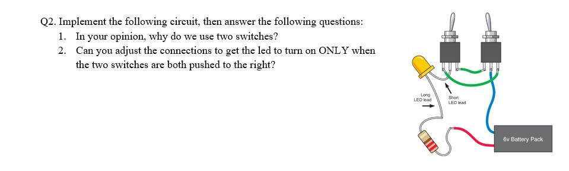
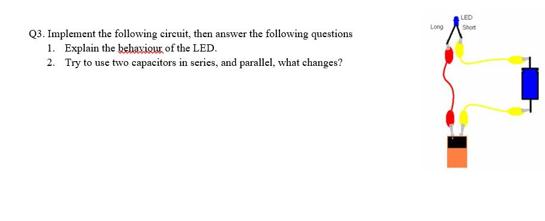
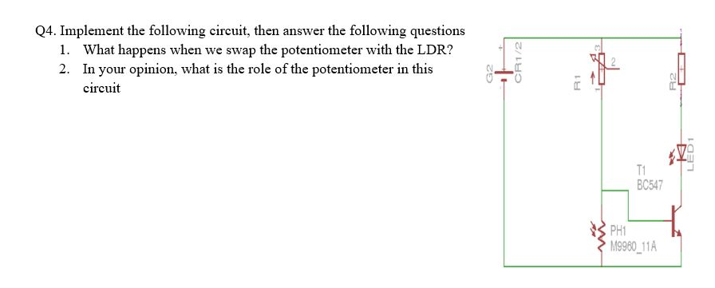

Q1:
1.1-The strength of the light changes up by moving the direction of pot left and right.
In the extreme of first direction, they are very bright.
And in the extreme of second direction, it is almost non-existent.
1.2- V= 9v ,V*= 2v ,I= 20mA
V**= 9-2= 7v
R=V/I. R= 7/3*10^-3 , R= 350
Q2:
2.1- We use it as XOR gate .
2.2-Yes,by changing the wires connections.
the frist wire connect to the frist pin in two switches.
the second wire connect to the third pin in two switches.
.Q3:
3.1- the led worked for a seccond then it stopped,couse when the capacitor was charging,the led was on and when it full charged the led became off.
3.2- when used two capacitors:
in series : the time of the led in on mode decreased couse the time of charging decreased.
in parallel: the time of the led in on mode increased couse the time of charging increased.

Q4:/h1> 
4.1- the pot makes the same thing by differnt way,by rolling instead of exposing to light.